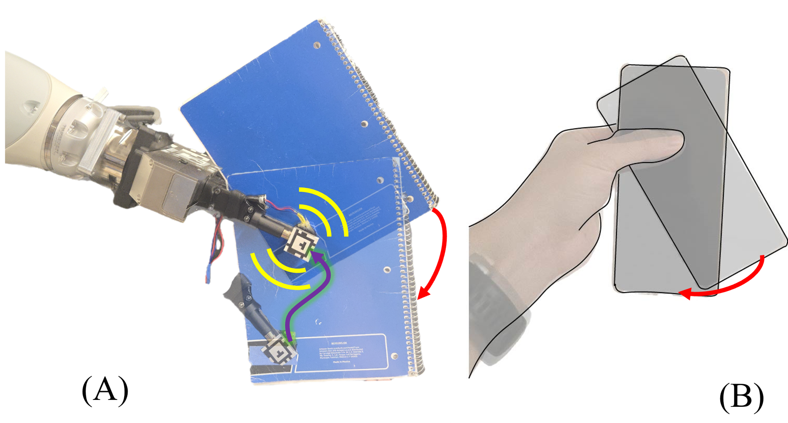

University of Michigan / Robotics Department
Xili Yi
Hi! I’m Xili Yi, a PhD candidate in Robotics at the University of Michigan. I work on contact-rich manipulation, focusing on how robots sense, predict, and control physical interactions involving friction, deformation, and vibration. My research blends mechanics, perception, and learning to give robots a more reliable understanding of how objects behave during real-world manipulation. I’m especially interested in building systems that combine principled models with multimodal sensing—audio, vision, and touch—to make manipulation more robust, adaptive, and deployable outside controlled lab settings.
I expect to graduate in Spring/Summer 2026 and am open to research and engineering opportunities in robotics.

2025
Presented Vib2Move at RSS 2025, showing that with fingertip micro-vibrations that modulate friction in-hand, we can enable millimeter-level object reconfiguration with a parallel jaw gripper in free space.2024
Published Dual asymmetric limit surfaces and their applications to planar manipulation at Autonomous Robots, extended Dual Limit Surfaces model to more general cases.2023
Presented Dual Limit Surfaces at a href="https://roboticsconference.org/">RSS 2023, showing that asymmetric friction modeling and constrained planners enable precise top-contact sliding with 90% lower orientation error than naive path planners.Let's collaborate
I'm always excited to chat about tactile perception, contact-rich planning, and experimental robotics. Reach me at yixili@umich.edu.
Below are the projects I am actively building and maintaining. Each combines new hardware with learning and planning pipelines to unlock richer contact understanding and manipulation skill.

VA2CONTACT: Visual-auditory Extrinsic Contact Estimation
(submitted)
VA2CONTACT fuses global visual context with local cues from active audio excitation to infer where grasped objects touch the environment. The system leverages differentiable acoustic rendering, an attention-based fusion network, and a contact reasoning head that transfers from simulation to real hardware without additional finetuning.

VIB2MOVE: In-hand Object Reconfiguration via Fingertip Micro-Vibrations
Robotics: Science and Systems (RSS) 2025
VIB2MOVE introduces a fingertip actuator that modulates friction with micro-vibrations, a sliding dynamics model, and a planner that synchronizes end-effector motion with vibration phases. The approach reliably repositions planar objects using a simple parallel gripper, achieving sub-centimeter accuracy across a range of shapes.

Dual asymmetric limit surfaces and their applications to planar manipulation
Autonomous Robots
We extended Precise Object Sliding with Top Contact via Asymmetric Dual Limit Surfaces to more general cases including inclined surfaces.
Precise Object Sliding with Top Contact via Asymmetric Dual Limit Surfaces
Robotics: Science and Systems (RSS) 2023
We model the frictional interactions at the top gripper-object interface and bottom support plane simultaneously via asymmetric Dual Limit Surfaces, then plan twists that keep the gripper stuck while the object slips to its goal. The planner avoids orientation drift and empirically cuts final pose error by 90% compared to linear paths.